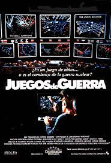
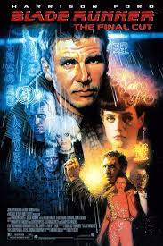
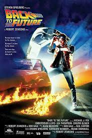

Películas que predijeron el futuro con precisión
Te mostaremos las películas que predijeron el futuro con precisión, incluso sin ser de ciencia ficción. Entérate cuáles fueron los avances tecnológicos y los cambios en la vida diaria a los que Hollywood se anticipó.
Juegos de guerra (1983)
Matthew Broderick era solo un niño cuando protagonizó esta película que predijo el futuro. ¿Cómo? Guerra cibernética y hackeo. En 1983 no eran palabras que siquiera sonaban conocidas en un mundo que apenas estaba descubriendo las computadoras.

Blade Runner (1982)
En este clásico de la ciencia ficción, todo es futurista. Pero, ¿algo de eso se ha cumplido? Sí y hoy nos parece la cosa más común del mundo: las enormes marquesinas de anuncios publicitarios no eran conocidas a comienzos de los ’80.

Volver al futuro (1985 / 1989 /1990)
Por supuesto que “Back to the future” no podía faltar en este listado de películas que predijeron el futuro. No todas sus predicciones se cumplieron, pero otras sí. Los gadgets que podemos llevar puestos como accesorios existen en la actualidad, como el reloj pulsera inteligente y los lentes tecnológicos desarrollados por Google. La segunda parte de la trilogía también predijo el cine 3D, cuando Marty ve un tiburón que simula atacarlo desde la marquesina de un cine.
